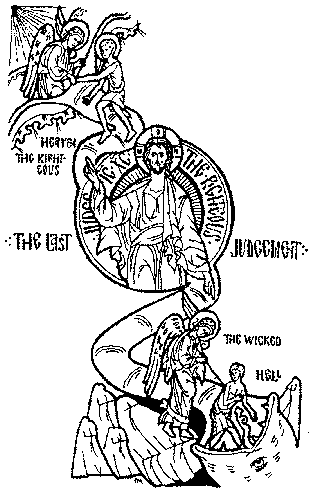

Synaxarion: Sunday of the Last Judgment
Meatfare Sunday

When Thou shalt sit to judge the world, O Judge of All, Count me worthy of Thy summons to Thy right hand.On this day we commemorate the inescapable second coming of Christ, ordained by the most divine Fathers to be observed after the second parable of the Prodigal, so that no one who has learned of the love of God for mankind from it will live in laziness saying, "God loves mankind, and when I am separated from Him by sin, all is prepared for my restoration."
This fearsome day of judgment has been designated for commemoration at this point in time, that through fear of death and the expectation of future torment, those who live in laziness may be encouraged to the virtues, not trusting only in the love of God, but also realizing that He is the righteous Judge who will judge all men according to their deeds. In other words those souls who have passed over are obliged to undergo judgment.
And this present feast is a type of symbol of this in that it is presented now as a final celebration just as it will be the last event after our death. For it behooves us to contemplate that as the beginning of the world and Adam's fall from Paradise are commemorated on the following Sunday, so this day is the end of all days and of the world itself.
The commemoration is appointed for this day of Meatfare, that in awe of this event we should limit our intake of earthly food, not giving ourselves over to gluttony, and be encouraged to love our neighbor. In other words, since we were banished from Eden, cursed and condemned through eating of the fruit, so the present event has been ordained at this time, as next Sunday we will be banished through Adam, until Christ comes again to raise us up to Paradise.
It is called the second coming, since Christ appeared to us at His first coming in the flesh and delivered the human race, and He will come again to judge whether that which He commanded us has been observed.
And when will this second coming occur? No one knows; for although He mentioned several preceding signs, the Lord concealed it from His Apostles. Before His coming the antichrist will appear. He will live his life after the manner of Christ, performing miracles like those which Christ performed, and raising the dead. Yet all that he does will be an illusion.
After this suddenly like lightning from heaven the Lord will come, going before His holy Cross, and a river of boiling fire will go before Him, cleansing the earth of its defilement. The antichrist will be seized immediately along with his servants and will be committed to eternal fire.
And when the angels sound the trumpets, all the nations of mankind will gather from all places and from all the ends of the earth in Jerusalem, for it is the center of the earth. And there the thrones will be set for judgment. Then all souls will be reunited with their bodies and clothed in incorruptible beauty, transformed into one likeness.
And with one word the Lord will separate the righteous from the sinners. Those who have done good will receive eternal life, and the sinners will be once more sent to eternal and everlasting torment.
Let it be noted that Christ will not ask who fasted, or who was naked, or who performed miracles, for although these things are good, mercy and compassion are far better. He will question both the righteous and the sinners on six commandment-like virtues, of which everyone is capable: "For I was hungry, and ye gave me to eat. I was thirsty, and ye gave me drink. I was a stranger, and ye took me in; naked, and ye clothed me. I was sick, and ye visited me. I was in prison, and ye came to me. Inasmuch as ye have done it to one of the least of these my brethren, ye have done it to me." Then all will confess the Lord Jesus Christ in the glory of God the Father.
Now the torments, according to the Holy Gospel are weeping and the gnashing of teeth, where their worm dies not and the fire is not quenched, and he shall be cast into outer darkness. For all the Church of God will joyfully delight in attaining the Kingdom of Heaven, being close to God in His holy place, and receiving everlasting glory and exaltation. But those who are separated from God through wasting the life of their souls in laziness and temporal nourishment will receive torment and darkness, and be eternally deprived of the divine radiance.
In Thine ineffable love for mankind, O Christ our God, make us worthy of Thy voice, which we long to hear, number us among those at Thy right hand, and have mercy on us. Amen.
We confidently recommend our web service provider, Orthodox Internet Services: excellent personal customer service, a fast and reliable server, excellent spam filtering, and an easy to use comprehensive control panel.